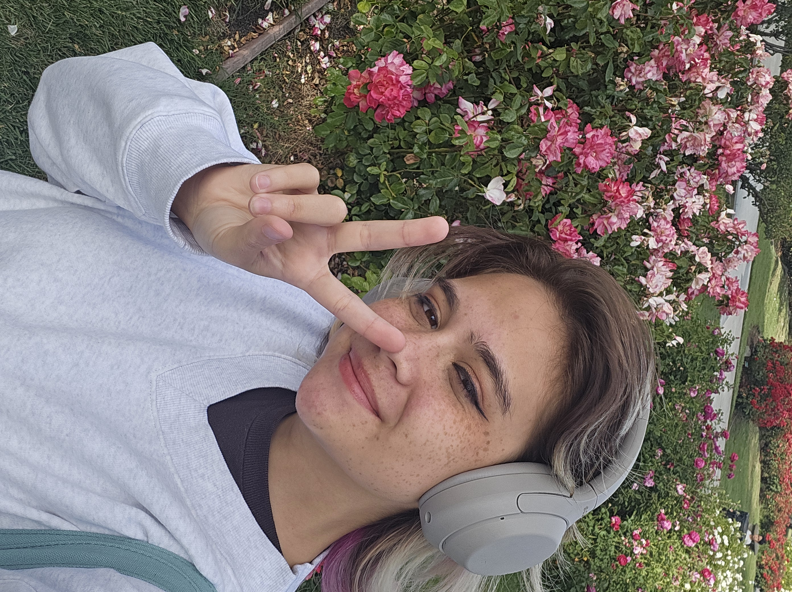

About Me!
My Name is Paige. I am currently a 3rd year Informatics major at UC Irvine specializing in HCI.
I love learning about user experience design and web development! I am particularly interested in creating accessible and inclusive digital experiences.
Through both researching with Professor Stacy Branham and Professor Jennifer Wong-ma with INsite Lab as well as working as a Digital Accessibilty Consultant with DASH (Digital Accessibility Support and Help)
has offered me plenty of oppurtunities to learn about WCAG principles, ADA regulations, and inclusive design practices.
Outside of academics, I enjoy musical theatre,
